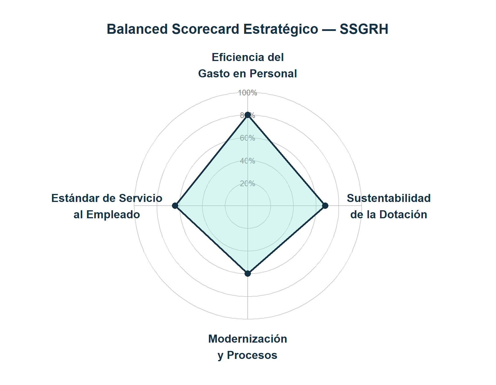

%%{init: {
"flowchart": {"useMaxWidth": true},
"themeVariables": {"fontSize": "18px"}
}}%%
flowchart LR
U[Usuario] --> I[Índice / Interfaz]
I --> T[Tableros]
I --> IND[Indicadores]
DWH[Data Warehouse / SIAL] --> D[Datos y procesamiento]
D --> IND
D --> T
IND --> T
T --> DEC[Toma de decisiones]
Documento de Transición
Gerencia Operativa de Análisis de Datos
Subsecretaría de Gestión de Recursos Humanos
1 Propósito del documento
El presente documento tiene como objetivo asegurar la continuidad operativa del área y orientar su evolución hacia un modelo de analítica avanzada, planificación estratégica y soporte a la toma de decisiones de alto nivel.
2 Rol del área
El área tiene como función principal:
- Desarrollar y mantener tableros de información estratégica en materia de RRHH
- Brindar soporte analítico a la toma de decisiones
- Consolidar y validar fuentes de datos críticas
- Evolucionar hacia modelos predictivos y sistemas de alerta
Nota
Actualmente el área opera como soporte transversal de datos para la SSGRH, con creciente demanda por parte de gabinete y de las áreas sustantivas.
3 Estado actual del ecosistema
3.1 Productos principales
- Dotaciones
- Dotaciones
- Rotación
- Discapacidad
- Seguimiento PEP
- Estructura
- Planeamiento de dotaciones
- Ausentismo y Licencias
- Licencias Médicas
- Ausentismo
- Autoseguro
- Salarios
- Salarios
- Presupuesto
- Presencialidad
- Registro Digital de Asistencia
- Control de presentismo
- Indicadores
4 Arquitectura del área
El área se estructura como un sistema integrado de datos, indicadores y tableros, orientado a transformar información operativa en insumos para la toma de decisiones estratégicas.
4.1 Arquitectura funcional del área
4.2 Arquitectura de repositorios
El área opera bajo una arquitectura modular basada en repositorios especializados, que permite escalar desarrollos, asegurar trazabilidad y sostener múltiples productos en paralelo.
El ecosistema del área se organiza en capas funcionales, permitiendo separar la gestión de datos, la analítica y la visualización. Esta estructura facilita la escalabilidad, el mantenimiento y la continuidad operativa.
4.2.1 Capa de datos y procesamiento
Esta capa concentra la lógica de integración, transformación y consolidación de datos, constituyendo la base estructural de los desarrollos del área.
Tip
El repositorio pre_dotaciones_2 funciona como base estructural para múltiples tableros.
Nota
Hay una idea de conformación de una base estructural para licencias (como pre_licencias).
4.2.2 Capa analítica y de control
Incluye desarrollos orientados al monitoreo, generación de indicadores y evolución hacia modelos de alertas y analítica avanzada.
4.2.3 Capa de visualización y tableros
Esta capa agrupa los productos orientados al usuario final, incluyendo tableros operativos y herramientas de seguimiento.
4.3 Modelo tecnológico
- R + Shiny (principal)
- JavaScript (visualizaciones y lógica frontend)
- Python (ETL y DataWarehouse)
- HTML (reportes)
- Integraciones con bases internas (SIAL, etc.)
5 Desafíos prioritarios de gestión
Advertencia
Estos desafíos tienen impacto directo en la gestión política y requieren priorización.
5.1 Consolidación de productos
5.1.1 Salarios
- Estado: parcialmente completo
- Tablero: Salarios
- Resta modelo consolidado de análisis de paritarias e inflaciones provinciales
- Link issue GitHub: Paritarias - IPC (jurisdicciones)
- Alto impacto en toma de decisiones
5.1.2 Presupuesto
- Estado: parcialmente completo
- Tablero: Presupuesto
- Resta integrar ejercicio 2026 (info solicitada a DGPLYCO)
- Relevancia creciente para gabinete y áreas sustantivas
- Proyecto de inclusión en el análisis al inciso 3 (LOYS)
5.1.3 Planeamiento de dotaciones (POF)
- Estado: en desarrollo
- Tablero: Planeamiento de dotaciones
- Actualmente descriptivo
- Link issue GitHub: Tablero integral Planeamiento de Dotaciones
- Necesidad de integrar con nuevo módulo de SIAL de planeamiento de dotaciones (consultar tablas a Ale S.)
5.1.4 Ejecución de UREs
- Estado: en desarrollo
- Tabelero: Estructura
- Actualmente no existe una sección de tablero específica para el seguimiento de ejecución de UREs, aunque se cuenta con datos consolidados en drive de DGALH.
- Link issue GitHub: Pestaña URE
- Necesidad de integrar con nuevo módulo de SIAL de Unidades Retributivas Extraordinarias (ya se consultaron tablas a Ale S., pero eventualmente se pueden confirmar con el equipo de SIAL)
5.2 Escalar tableros de Presencialidad y Control biométrico
5.2.1 Presencialidad
- Escalar modelo actual (Lezama → todo GCBA)
- Estructura propuesta:
- Resumen
- Convocatoria
- Ocupación
- Fichadas (cumplimiento 4x1)
- Link wireframe Figma: Presencialidad
5.2.2 Control biométrico
- Escalar modelo actual (docentes → todo GCBA)
- Evolución esperada:
- Resumen mapa
- Gráficos evolutivos de instalación y uso de equipos
- Detalle de infraestructura de control biométrico
- Detalle de enrolamiento de agentes
- Detalle de uso de equipos (fichadas)
- Link wireframe Figma: Registro Digital de Asistencia
5.3 Reporte con IA del Sistema de indicadores
- Generación automática de insights
- Detección de desvíos
- Alertas tempranas
- Necesidad de integrar con lectura de indicadores y tableros y, eventualmente, con modelos predictivos
- Link issue GitHub: Alertas
- Link drive estructura completa de indicadores SSGRH: Estructura completa de indicadores SSGRH
Nota
Existen antecedentes en repositorios como alertas_indicadores.
6 Proyectos estratégicos
Importante
Estos proyectos pudieran precisar una expansión en la capacidad operativa del área.
6.1 Gestión estrategica de RRHH
6.1.1 Balanced Scorecard institucional
- El modelo organiza la estrategia en cuatro perspectivas interdependientes, cada una con objetivos específicos y métricas asociadas que permiten una gestión integral del capital humano.
- Dimensiones del Marco Estratégico de la SSGRH:
- Eficiencia del Gasto en Personal
- Sustentabilidad de la Dotación
- Modernización y Procesos
- Estándar de Servicio al Empleado
- Link presentación explicativa: Balanced Scorecard
- Link drive con detalle de indicadores Marco Estratégico: Marco Estratégico SSGRH
- Link drive descripción del proyecto: Estructura Balanced Scorecard

Figura — Balanced Scorecard estratégico de la Subsecretaría de Gestión de Recursos Humanos
6.2 Analítica predictiva
6.2.1 Predicción de rotación
- Identificación de riesgo de salida
- Insumo para políticas de retención o planificación de la contratación
6.2.2 Dotación óptima
- Definición de estructuras eficientes
- Soporte a planificación presupuestaria
7 Lineamientos de evolución
Tip
El área debe evolucionar en tres dimensiones clave:
- De descriptivo → predictivo
- De tableros → sistema de decisión
- De respuesta a demanda → agenda estratégica
8 Roadmap sugerido
8.1 0–3 meses
- Consolidación de tableros:
- Salarios
- Presupuesto (inc. 1)
- Ejecución de UREs
- Definición de desarrollos para escalar tableros:
- Presentismo
- Registro Digital de Asistencia
- Presentismo
8.2 3–6 meses
- Integración de tableros:
- Presupuesto (inc. 3 - SIGAF; acceso pendiente)
- Planeamiento de dotaciones
- Indicadores con IA
8.3 6–12 meses
- Modelos predictivos
- Balanced Scorecard
9 Recomendaciones de gestión
- Priorizar productos con impacto político
- Evitar dispersión en pedidos ad hoc
- Consolidar fuentes de datos (DWH)
- Fortalecer vínculo con áreas usuarias
Importante
La sostenibilidad del área depende más de la priorización que de la capacidad técnica.